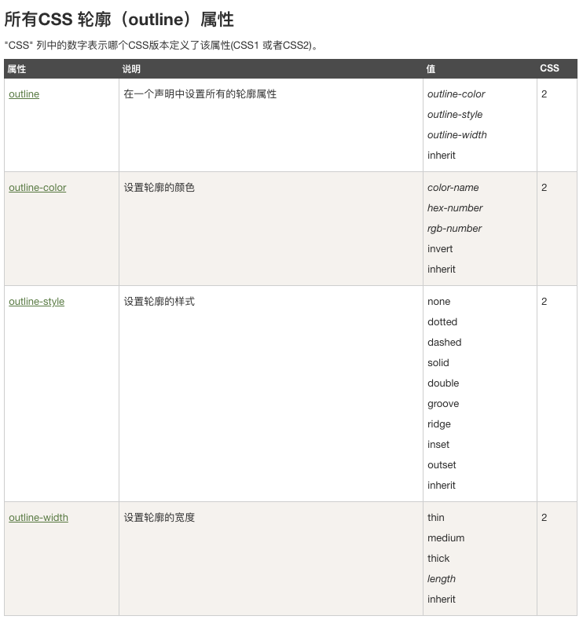
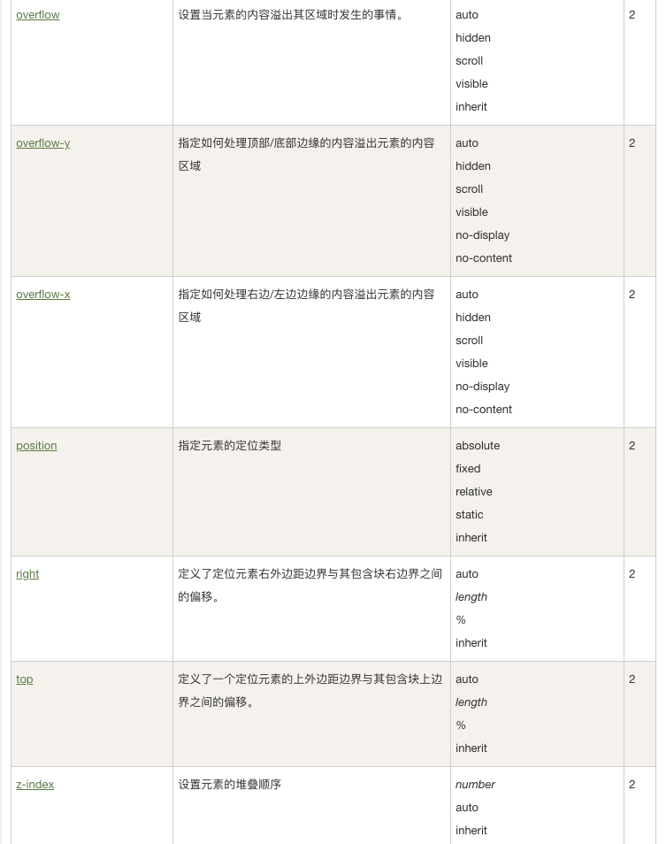
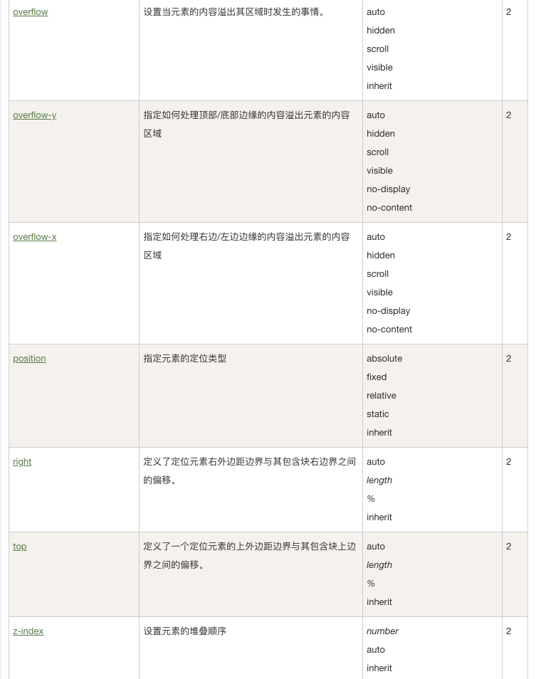
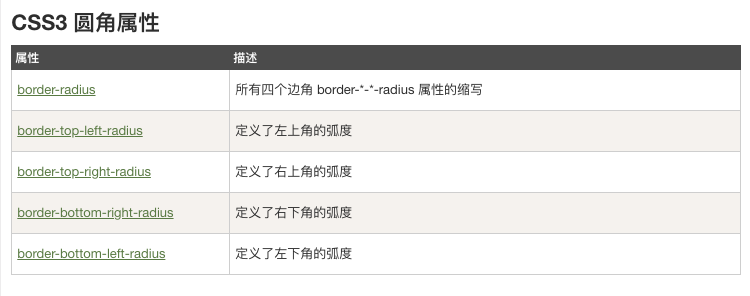

CSS是用来确定 HTML样式的
2018年2月26日
“当我年轻的时候，我梦想改变这个世界；当我成熟以后，我发现我不能够改变这个世界，我将目光缩短了些，决定只改变我的国家；当我进入暮年以后，我发现我不能够改变我们的国家，我的最后愿望仅仅是改变一下我的家庭，但是，这也不可能。当我现在躺在床上，行将就木时，我突然意识到：如果一开始我仅仅去改变我自己，然后，我可能改变我的家庭；在家人的帮助和鼓励下，我可能为国家做一些事情；然后，谁知道呢?我甚至可能改变这个世界。”
百度一下上划线
中划线
下划线
This is some text.
This is some text.
This is some text.
这是一些文本。这是一些文本。这是一些文本。这是一些文本。这是一些文本。 这是一些文本。这是一些文本。这是一些文本。这是一些文本。这是一些文本。 这是一些文本。这是一些文本。这是一些文本。这是一些文本。这是一些文本。 这是一些文本。这是一些文本。这是一些文本。这是一些文本。这是一些文本。这是一些文本。这是一些文本。这是一些文本。这是一些文本。这是一些文本.

四周都要边框
红色底部边框
圆角边框
左侧边框带宽度，颜色为蓝色
四周边框各不一样
 

请把鼠标移动到单词上，可以看到鼠标指针发生变化：
- auto
- crosshair
- default
- e-resize
- help
- move
- n-resize
- ne-resize
- nw-resize
- pointer
- progress
- s-resize
- se-resize
- sw-resize
- text
- w-resize
- wait
